프로젝트 성격개인 개발로 WinAPI와 DirectX11 위에서 엔진 코어, 에디터 도구, 런타임 기능을 직접 구현한 자체 게임 엔진 프로젝트.
개발 기간2025.11 ~ 2026.03
01. Architecture
기능보다 먼저 책임 경계를 세운 엔진 구조
Client / Engine / Source 계층을 분리해 런타임 코어, 제작 도구, 게임 규칙이 서로 다른 이유로 변경되도록 설계했다.
Engine Core
GameObject는 컴포넌트와 자식 오브젝트를 소유하고,
Component는 Begin, FinalTick, 저장/로드, 복제 인터페이스를 가진다.
렌더링, 충돌, 자산, 레벨 진행은 Manager 계층이 맡는다.
GameObjectComponentManager
Editor Tooling
Client 계층은 ImGui 기반 제작 도구를 담당한다.
Inspector, ContentUI, SpriteEditorUI, FlipbookEditorUI,
Animator3DUI가 엔진 자산과 컴포넌트를 조작한다.
ImGuiInspectorEditor UI
Gameplay Layer
Source 계층은 게임 규칙만 담당한다.
플레이어, 몬스터, 무기, 트리거 로직은 CScript 기반으로 붙고,
엔진 기능은 조합해서 사용한다.
ScriptPlayerTrigger
02. Runtime
프레임 흐름을 Manager 단위로 통제
엔진은 매 프레임 입력과 시간 갱신, 레벨 처리, 충돌 검사, 렌더링, 지연 작업 처리를 일정한 순서로 수행한다.
프레임 처리 순서
1
Engine::ProgressTimeMgr, KeyMgr 갱신 후 Level 진행
2
LevelMgr::ProgressLevel Tick, FinalTick, 충돌 검사, RenderMgr 실행
3
TaskMgr::Tick생성, 삭제, 자식 연결, 레벨 상태 변경을 프레임 말미에 반영
Component 조합 예시
TestLevel.cpp에서 플레이어는 FBX MeshData로 인스턴스화된 뒤
Animator3D, Collider3D, RigidBody3D, CPlayerScript를 함께 가진다.
광선검은 플레이어의 손 Bone에 자식 오브젝트로 붙어 애니메이션과 상호작용한다.
TransformAnimator3DCollider3DRigidBody3DScript
03. Core Features
에디터에서 런타임까지 이어지는 대표 기능 3가지
Client의 제작 UI에서 자산을 편집하고 Engine의 Asset으로 저장한다.
런타임 Component는 저장된 데이터를 읽어 프레임 재생과 애니메이션 렌더링에 사용한다.
Sprite Editor
텍스처에서 실제로 사용되는 픽셀 영역을 찾아 Sprite Asset으로 저장하는 2D 자산 제작 도구.
BFS알파 기반 자동 Trim
UV픽셀 좌표를 정규화
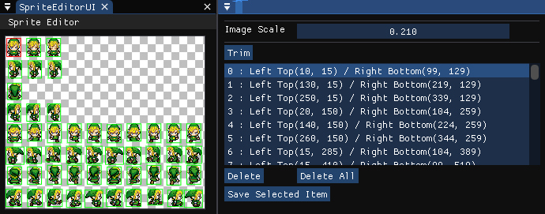
Sprite Auto Trim 실행 화면: 알파 기반 Slice 결과와 선택 영역 목록
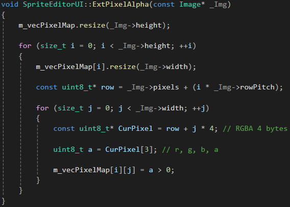
알파 채널을 픽셀 맵으로 추출하는 코드
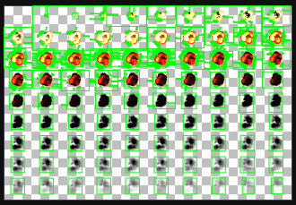
알파 기준값이 너무 낮을 때 불필요한 Slice 영역이 과다 생성되는 사례
TextureUI에서 선택한 텍스처를 SpriteEditorUI로 전달한다.
알파 채널을 uint8_t 맵으로 추출하고 BFS로 연결 픽셀 영역을 탐색한다.
알파 기준값이 0이거나 너무 낮으면 투명에 가까운 노이즈 픽셀까지 연결되어 의미 없는 영역이 함께 선택된다.
유효 임계값과 최소 영역 조건을 적용한 뒤, 좌상단/우하단 박스를 그려 선택 가능한 Slice 목록으로 만든다.
선택 영역은 ASprite의 Atlas, LeftTop, Slice, Offset으로 저장되고 Content UI를 갱신한다.
Flipbook Editor
Sprite Asset을 시간 순서로 조립하고, 편집기 미리보기와 런타임 재생 컴포넌트까지 연결한 2D 애니메이션 제작 흐름.
Panel최대 Sprite 기준 크기
PlayDuration / Repeat
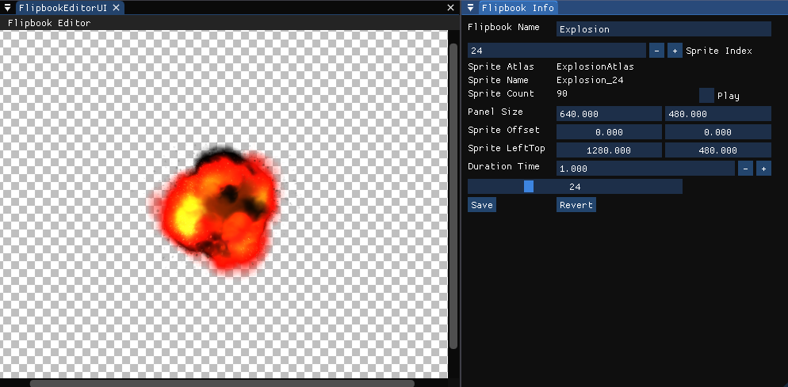
Flipbook Editor 실행 화면: 프레임 미리보기, Sprite Index, Offset, Duration 조정
AFlipbook은 Sprite 배열, PanelSize, Duration을 하나의 자산으로 저장/로드한다.
FlipbookEditorUI는 Sprite 추가, 인덱스 이동, Offset/LeftTop 조정, Play 미리보기, Save/Revert를 제공한다.
이전 프레임을 반투명으로 겹쳐 보여주어 프레임 간 위치 차이를 조정할 수 있게 했다.
CFlipbookRender는 Duration을 Sprite 수로 나눠 프레임을 넘기고, RepeatCount와 Emissive 플래그를 런타임에서 처리한다.
FBX Animation
FBX SDK 로더, 엔진 전용 MeshData 캐시, Section 기반 재생, Bone Matrix Compute Shader를 연결한 3D 애니메이션 파이프라인.
.mdat재파싱 비용 감소
Blend상태 전환 보간
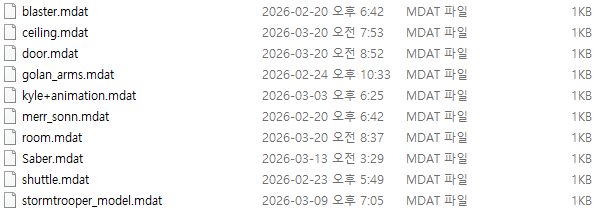
FBX 파싱 결과를 저장한 MeshData 캐시
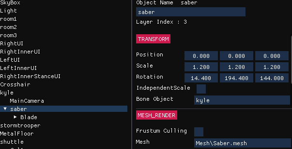
Bone Object 기반 자식 오브젝트 연결
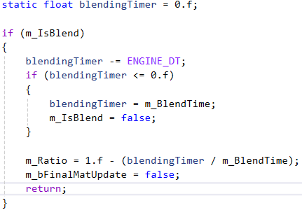
Animation Blending 코드
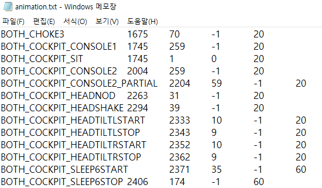
Animation Section 텍스트 데이터
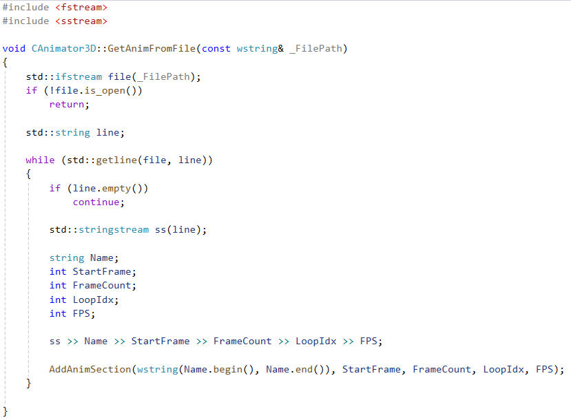
txt 기반 Section 등록 코드
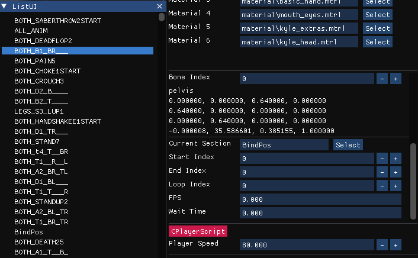
Animator3D Section 편집 UI
AssetMgr::LoadFBX는 먼저 MeshData/*.mdat를 찾고, 없을 때만 FBX를 파싱해 저장한다.
FBXLoader는 Skeleton, Animation Clip, Mesh, Material, Texture, Weight/Index 데이터를 추출한다.
AMeshData::Instantiate는 MeshRender를 구성하고, 애니메이션 Mesh일 때 CAnimator3D를 자동 부착한다.
CAnimator3D는 Section 이름, Start/End/Loop, FPS, WaitTime으로 큰 클립 안의 동작 구간을 제어한다.
Frame/NextFrame/Ratio와 BlendTime을 이용해 상태 전환을 보간하고, 최종 Bone Matrix는 Compute Shader로 계산해 렌더링에 바인딩한다.
04. Rendering & Editor
Editor와 Play를 함께 지원하는 렌더링 구조
렌더링은 단순 효과 목록이 아니라 Editor 모드, Play 모드, 선택 도구, 디버그 렌더링이 공존하는 프레임 시스템이다.
ShadowMap 기반 그림자와 Soft Shadow
Directional Light 전용 카메라로 ShadowMap 깊이 텍스처를 만든 뒤, 라이트 패스에서 현재 픽셀을 광원 투영 좌표로 변환해 깊이를 비교한다.
주변 texel을 3x3으로 추가 샘플링하고 평균값으로 ShadowRatio를 보간해 그림자 경계가 자연스럽게 흐려지도록 처리했다.
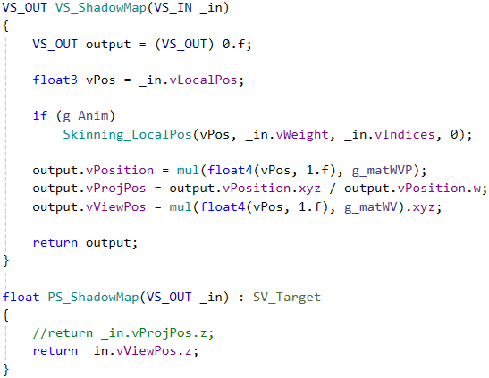
shadowmap.fx: 광원 시점의 깊이값을 ShadowMap에 기록
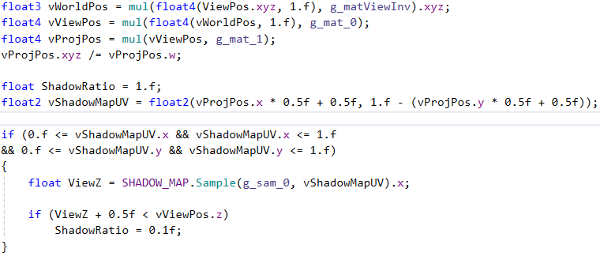
light.fx: 월드 좌표를 광원 투영 좌표로 변환해 깊이 비교
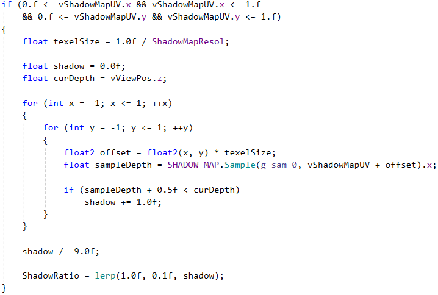
3x3 주변 샘플 평균으로 딱딱한 그림자 경계를 완화
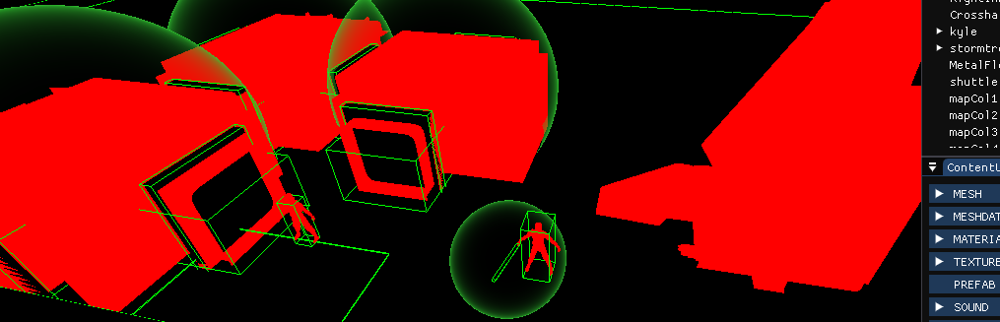
Editor 모드 선택 결과
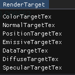
Object ID를 저장하는 DataTargetTex
Object Picker: DataTargetTex에 기록한 Object ID를 화면 좌표 기준으로 읽어 에디터 선택에 사용
RenderMgr 중심 흐름
RenderMgr::Progress는 광원 버퍼 바인딩, MRT Clear, Editor/Play 렌더 함수 실행,
선택 타깃 출력, 디버그 렌더링, 리소스 Clear를 담당한다.
GPU Object Picker
Editor 모드에서 클릭 좌표를 Compute Shader로 전달하고,
DataTargetTex의 Object ID를 읽어 Inspector 선택 상태 변경에 사용한다.
물리 충돌과 에디터 선택 기능을 분리한 구조다.
확장 렌더링 기능
Deferred Rendering, ShadowMap, Soft Shadow, SkyBox, Particle, PostProcess, Laser/Billboard 계열 효과가
RenderMgr와 Material/Shader 자산 체계 위에서 동작한다.
05. Interaction
충돌 판정과 물리 반응을 분리한 상호작용 시스템
Collider3D는 접촉 여부를 판단하고, RigidBody3D는 힘, 속도, 중력, 충격량을 통해 상태 반응을 처리한다.
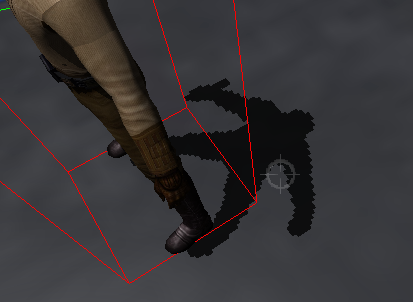
애니메이션 Bone 위치를 기준으로 Collider/Debug 형태를 확인한 실행 화면
CollisionMgr
레이어 조합을 비트 매트릭스로 관리하고, 충돌 쌍의 이전 상태를 저장해
BeginOverlap, Overlap, EndOverlap 이벤트를 구분한다.
3D 판정에는 OBB 분리축 이론을 사용한다.
RigidBody3D
Mass, InverseMass, Velocity, ForceAccum, Gravity를 관리하고 FinalTick에서 적분한다.
플레이어는 Collider3D와 RigidBody3D를 함께 보유해 접촉 판정과 물리 반응을 분리해서 확장한다.
06. Development Path
기능 확장 과정
2D 제작 도구에서 시작해 렌더링, FBX 애니메이션, 충돌/물리로 확장하며 각 단계에서 엔진 구조를 보강했다.
2025.11
Sprite / Source 분리
SpriteEditor Trim, Source Proj 분리, Level Save/Load 기반 추가.